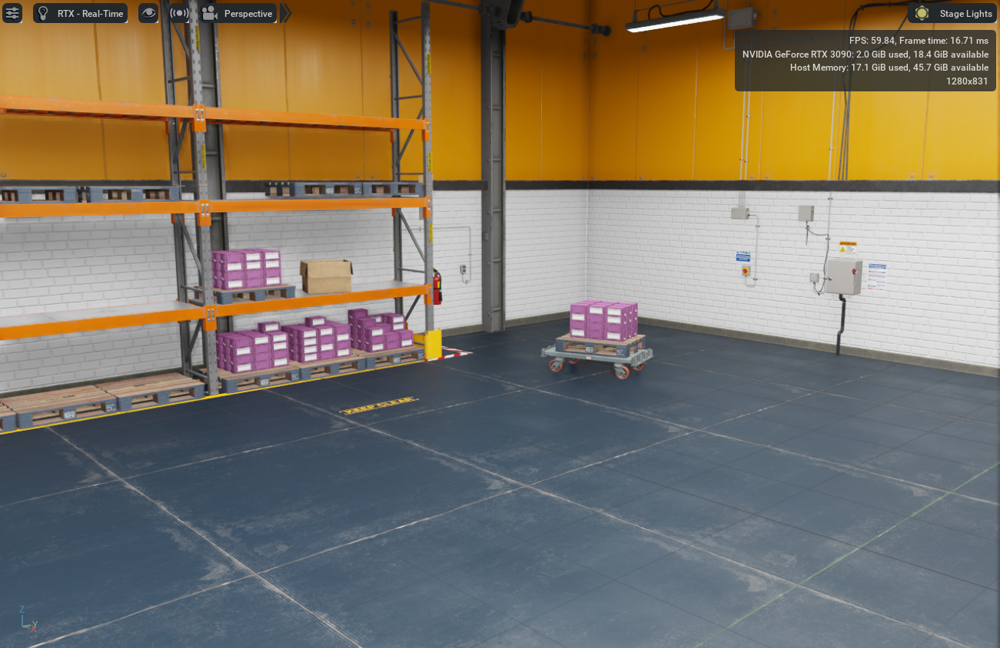

Environments
At the moment, we only provide in the Params API a dictionary named SIMULATION_ENVIRONMENTS
which stores the path to Isaac Sim pre-made worlds. As we update this simulation framework, expect
the list of default simulation environments to grow.
List of provided simulation environments
World |
Name |
|---|---|
|
Default Environment |
|
Black Gridroom |
|
Curved Gridroom |
|
Hospital |
|
Office |
|
Simple Room |
 |
Warehouse |
|
Warehouse with Forklifts |
|
Warehouse with Shelves |
|
Full Warehouse |
|
Flat Plane |
|
Rough Plane |
|
Slope Plane |
|
Stairs Plane |


To spawn one of the provided environments when using the Pegasus Simulator in standalone application mode, you can just add to your code:
from pegasus.simulator.params import SIMULATION_ENVIRONMENTS
from pegasus.simulator.logic.interface.pegasus_interface import PegasusInterface
# Start the Pegasus Interface
pg = PegasusInterface()
# Load the environment
pg.load_environment(SIMULATION_ENVIRONMENTS["Curved Gridroom"])
To index the dictionary of pre-made simulation environments, just use the names of the columns table.
Note
In this initial version it is not possible to spawn a custom 3D USD world using the Pegasus Simulator GUI. If you use the Pegasus Simulator in extension mode and want to use your custom worlds, for now you need manually drag and drop the assets into the viewport like a cavemen 👌️. This is for sure a feature in the Roadmap.
However, when using the Pegasus Simulator in standalone application mode, i.e. Python scripting,
you can load your own custom USD files using the load_environment(usd_path) method.
Setting the Map Global Coordinates
By default, the latitude, longitude and altitude of the origin of the simulated world is set to the geographic coordinates of Instituto Superior Técnico, Lisbon (Portugal), i.e.:
latitude= 90.0 (º)
longitude= 38.736832 (º)
altitude= -9.137977 (m)
You can change the default coordinates by either:
Using the GUI of the Pegasus Simulator when operating in extension mode.

Use the methods provided by
PegasusInterface, i.e:from pegasus.simulator.params import SIMULATION_ENVIRONMENTS from pegasus.simulator.logic.interface.pegasus_interface import PegasusInterface # Start the Pegasus Interface pg = PegasusInterface() # Change only the global coordinates for this instance of the code # Future code runs will keep the same default coordinates pg.set_global_coordinates(latitude, longitude, altitude) # Change the default global coordinates for the simulator # This will be saved for future runs pg.set_new_global_coordinates(latitude, longitude, altitude)